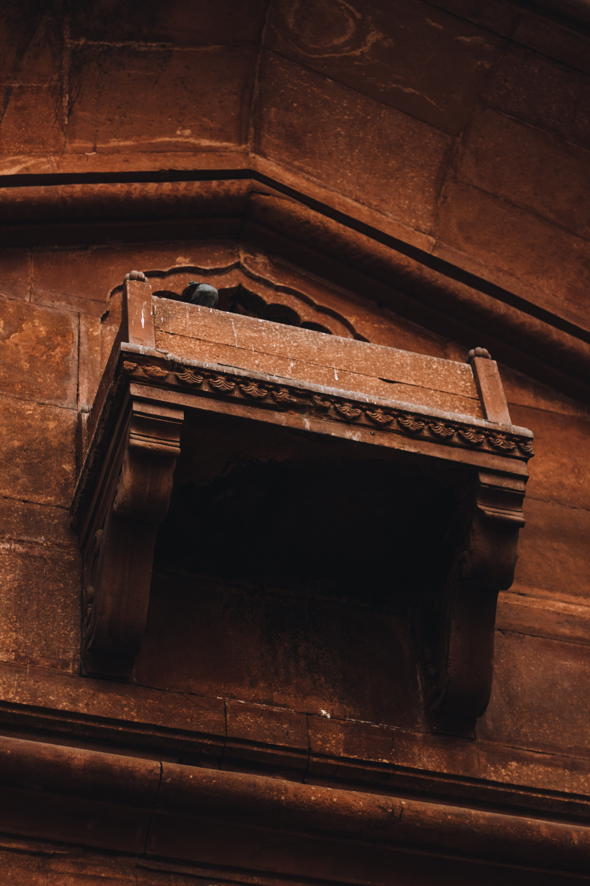
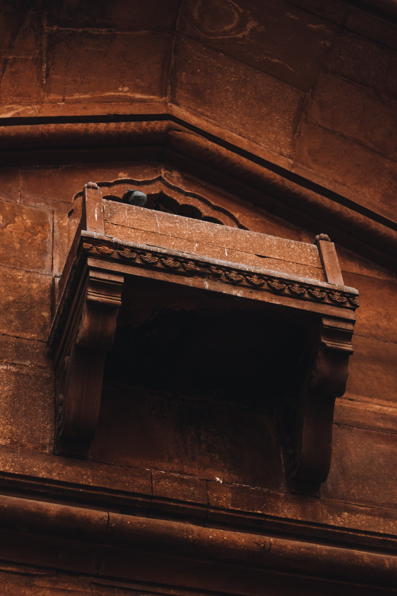

Red Fort
 


The Red Fort or Lal Qila (Hindustani: [laːlqiːlaː]) is a historic fort in Old Delhi, Delhi in India that served as the main residence of the Mughal Emperors. Emperor Shah Jahan commissioned construction of the Red Fort on 12 May 1638, when he decided to shift his capital from Agra to Delhi. Originally red and white, its design is credited to architect Ustad Ahmad Lahori, who also constructed the Taj Mahal. The fort represents the peak in Mughal architecture under Shah Jahan, and combines Persianate palace architecture with Indian traditions. The fort was plundered of its artwork and jewels during Nadir Shah's invasion of the Mughal Empire in 1739. Most of the fort's marble structures were subsequently demolished by the British following the Indian Rebellion of 1857. The fort's defensive walls were largely undamaged, and the fortress was subsequently used as a garrison. On 15 August 1947, the first Prime Minister of India, Jawaharlal Nehru, raised the Indian flag above the Lahori Gate. Every year on India's Independence Day (15 August), the Prime Minister hoists the Indian tricolour flag at the fort's main gate and delivers a nationally broadcast speech from its ramparts. The Red Fort was designated a UNESCO World Heritage Site in 2007 as part of the Red Fort Complex. Emperor Shah Jahan commissioned construction of the Red Fort on 12 May 1638, when he decided to shift his capital from Agra to Delhi. Originally red and white, Shah Jahan's favourite colours, its design is credited to architect Ustad Ahmad Lahori, who also constructed the Taj Mahal. The fort lies along the Yamuna River, which fed the moats surrounding most of the walls. Construction began in the sacred Islamic month of Muharram, on 13 May 1638.[11]: 01 Supervised by Shah Jahan, it was completed on 6 April 1648. Unlike other Mughal forts, the Red Fort's boundary walls are asymmetrical to contain the older Salimgarh Fort.: 04 The fortress-palace was a focal point of the city of Shahjahanabad, which is present-day Old Delhi. Shah Jahan's successor, Aurangzeb, added the Moti Masjid (Pearl Mosque) to the emperor's private quarters, constructing barbicans in front of the two main gates to make the entrance to the palace more circuitous.: The administrative and fiscal structure of the Mughal dynasty declined after Aurangzeb, and the 18th century saw a degeneration of the palace. In 1712 Jahandar Shah became the Mughal Emperor. Within a year of beginning his rule, Shah was murdered and replaced by Farrukhsiyar. Muhammad Shah, known as 'Rangila' (the Colourful) for his interest in art. In 1739, Persian emperor Nadir Shah easily defeated the strong Mughal army of around 200,000 soldiers, plundering the Red Fort, including the Peacock Throne. Nadir Shah returned to Persia after three months, leaving a destroyed city and a weakened Mughal empire to Muhammad Shah.: 09 The internal weakness of the Mughal Empire made the Mughals only titular rulers of Delhi, and a 1752 treaty made the Marathas protectors of the throne at Delhi. The 1758 Maratha victory at Sirhind aided by the Sikhs and successive defeat at Panipat[18] placed them in further conflict with Ahmad Shah Durrani.